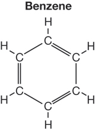
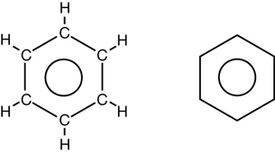

Module 5—Hydrocarbons and the Petroleum Industry
 Explore
Explore
 Read
Read
Aromatics include benzene and all compounds that contain a benzene-like structure. The chemical formula for benzene is C6H6 but the structural diagram is more difficult to pinpoint. The structure of benzene is unique to this class of hydrocarbons. This is a unique class of compounds because of its combination of physical and chemical properties.
Read pages 381–382 in the textbook to learn more about the evidence that led to the development of a chemical structure for benzene.
 Try This
Try This
- Consider this early model for the structure of benzene.
- 
Identify one piece of evidence listed on page 381 that supports using this chemical structure as a representation for benzene and one piece of evidence that suggests this is not an appropriate representation for this molecule. Share your evidence with your teacher.
- Consider the following two illustrations:
- 
In both diagrams, the inner circle illustrates that there are not three specific double bond locations; rather, there is a way for all six carbons in the ring to bond to the remaining electrons.
Read
Read the section “Naming Aromatics” on pages 382–383 in the textbook. Complete “Communication example” and “Sample problem 9.3” on page 383.
 For extra reinforcement, listen to the “Communication example” audio description.
For extra reinforcement, listen to the “Communication example” audio description.
Use these strategies when naming aromatics:
- If there is an alkyl branch attached to a benzene, it is called an alkylbenzene.
- If you have more than one alkyl branch attached to a benzene, always number the benzene ring so that the numbers are the lowest possible (you will always have a branch numbered one).
- If there is a benzene ring attached to a larger molecule, the benzene is considered the branch and is called a phenyl branch.
 Self-Check
Self-Check
Complete “Section 9.4” questions 1–10 on page 385 of the textbook.